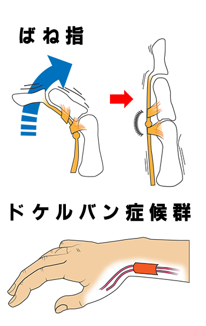

腱鞘炎
腱鞘炎とは
腱鞘炎とは、骨と筋肉を繋いでいる腱と腱を包む腱鞘に摩擦が生じることで起こる炎症のことです。
腱や腱鞘は全身の様々な部位に存在していますが、動きの多い手首や指での発症が主となります。
代表的なものとしては、スマホの使いすぎなどにより手首の親指側にある腱鞘に発症する「ドケルバン病」や指の腱鞘に発症する「ばね指」等があります。

症状
手首や指の付け根の痛み、腫れ
指の動きの悪さ
指の曲げ伸ばしがしづらい
原因
腱鞘炎は指や手首を使いすぎることが原因で発症します。
スマホを長時間操作する方、ピアノなど指を多く使う楽器の演奏者、何かを強く握るスポーツをする方、育児中の方に多く発症しています。
また、加齢に伴い腱鞘が固くなることや，妊娠出産や更年期などの女性ホルモンの変化がきっかけで発症することもあります。
診断
医師による問診や視診、触診等によって診断を行います。
関節の障害や骨折との区別をつけるためにもレントゲンやCT、MRIなどの画像診断を行います。
治療
使いすぎが原因のため、患部を安静にします。
夜間などに指を伸ばした状態でテーピングをし、指を安静にしましょう。
ただし、長時間の固定は関節が固くなってしまうので、一日のうちに何度かはストレッチをします。
そのほか、鎮静薬や抗炎症薬の内服や湿布、超音波治療を行います。
症状が強い場合は、炎症を抑えるステロイド薬を注射します。